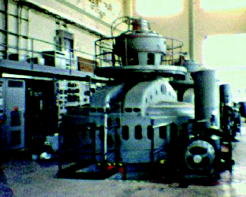

Figure 1: The Dashville hydroelectric plant sports an unmistakable early industrial chic. Apart from new copper windings and bearing maintenance, the generators are all original equipment. The lubricating oil pumps in the right foreground have been running forever, according to our guide.
Back to Article